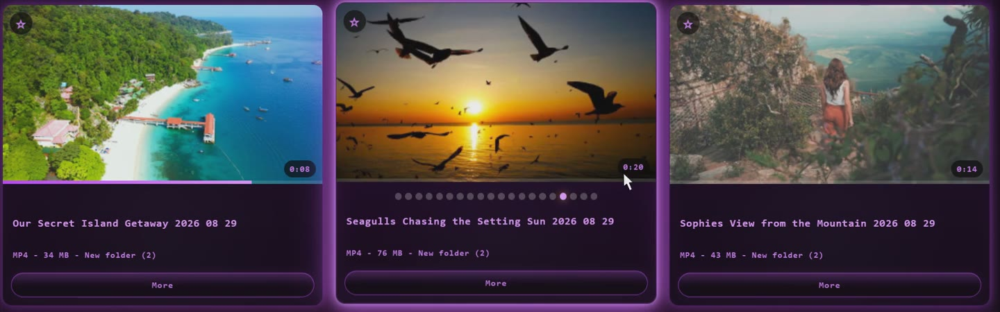
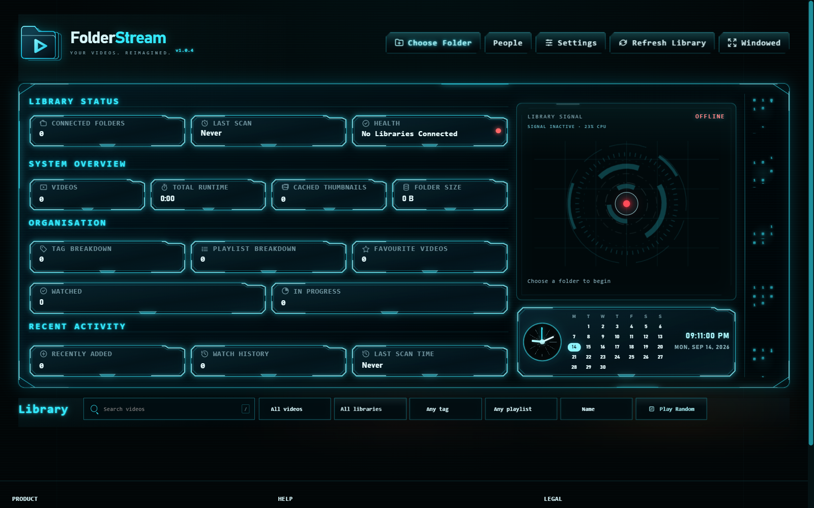

Search & filter
Narrow a collection quickly.
Search by title and filter by library, tags, playlists, profiles, favourites, and watch status.
The full FolderStream tour
FolderStream turns videos in folders and connected drives into a private visual library. Keep your original files where they are while you browse, organise, watch, and rediscover them in one place.
See what you have
Choose your video folders and FolderStream brings their contents together. Generated thumbnails, clear cards, and preview frames make it easier to recognise a moment than a filename ever could.

A closer look
Move across video cards to reveal frames from inside each clip. FolderStream keeps generated previews on your device so browsing stays quick. The recording shows the previews changing across three videos.

Find it your way
Use the clues you actually remember—people, places, projects, tags, and favourites—to make a large collection feel manageable.
Search & filter
Search by title and filter by library, tags, playlists, profiles, favourites, and watch status.
Names & cover art
Add a clear title or choose custom cover art when a filename or generated thumbnail does not tell the story.
Tags & playlists
Group family moments, trips, work clips, or projects without moving the original files.
Favourites
Mark the videos you return to most often and find them again from your library.

Made for watching
Play a video directly from your library. Watch progress and Continue Watching help you return to unfinished clips, while favourites and organisation controls stay close by.
Local and opt-in
People Recognition checks new or changed videos as your library is prepared and suggests face groups. You can name a person, confirm or correct matches, or leave suggestions alone. It can also notice faces while you watch.

People Recognition is available in FolderStream v1.0.4. Detection can make mistakes, so review suggestions before relying on them.
Make it feel like yours
Start with Sci-Fi HUD, or choose Binary Green, Purple Haze, or Sunset Dream. Hover over a theme name to see the dashboard change; select one to keep it on display.

Hover over a theme to preview it, or select one to keep it on display.

Your library stays yours
FolderStream works with folders and drives you select. It does not need to upload your videos or move them into a new storage system.
Local first
No desktop account or media server is required to browse and play your local collection.
Library health
Spot missing files or disconnected locations and reconnect videos when folders or drives move.
Backup & Restore · Pro
Export supported library organisation and restore it later. Backups do not include your original video files, so bring those separately.
How backup worksEvery collection has a story
From family moments to creative work, FolderStream gives different kinds of videos one visual home.
 Family & home videos
Family & home videos Travel & adventures
Travel & adventures Creative projects
Creative projects Learning & tutorials
Learning & tutorials Music & concerts
Music & concerts Sport & highlights
Sport & highlights Gaming & recordings
Gaming & recordings Social content
Social content Movies & series
Movies & series Work & projects
Work & projectsYour videos are ready
Start with up to 100 videos in FolderStream Free. Move to Pro when your library grows.